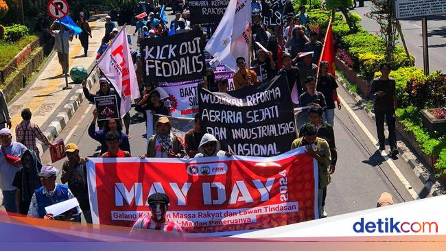

DEMO HARI BURUH

DEMO HARI BURUH
Tanggal 1 Mei diperingati sebagai Hari Buruh Internasional, setiap tanggal ini serikat pekerja dan aliansi masyarakat di berbagai wilayah Indonesia, rutin menggelar aksi demonstrasi secara damai untuk menyuarakan hak dan aspirasi para buruh.
Link Highlight